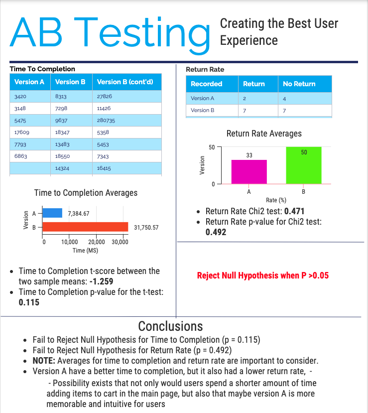

For too long, the cactus industry has been hampered by their inability to make a website that appeals to users. In the context of the websites being discussed, Version B is extremely similar to version B, expect each product has a green background, and the spaces between products are greatly increased. Here, we will be testing 2 iterations of a potential cactus ordering websits to see if we can choose the best website for selling cactuses!
The task: Users are instructed to put $150 of cacti into their cart.
Click here to access the webpage
In this section, we will be creating and describing the null and alternative hypothesis for two key metrics: Time to Completion and Return Rate
I collected data for the website primarily through the weekly studios, and also by sending the link to some of my peers and informing them of the directions. Once I recieved the log files, I converted them into a csv file and cleaned out the data, leaving me with 20 unique sessions between both versions A and B.
